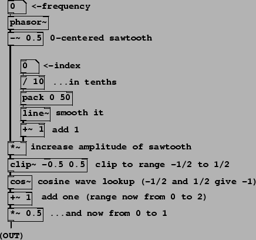
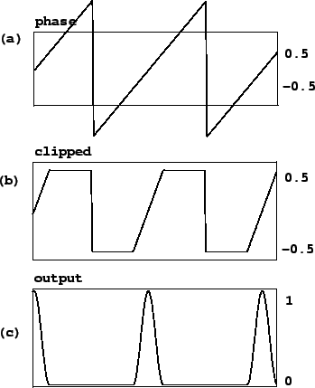
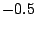

Example F01.pulse.pd (Figure 6.13) generates a variable-width pulse train
using stretched wavetable lookup. Figure
6.14 shows two intermediate products of the patch and its output.
The patch carries out the job in the simplest possible way, placing the
pulse at phase  instead of phase zero; in later
examples this will be fixed by adding 0.5 to the phase and wrapping.
instead of phase zero; in later
examples this will be fixed by adding 0.5 to the phase and wrapping.
|  |
|  |
The initial phase is adjusted to run from -0.5 to 0.5 and then scaled by a
multiplier of at least one, resulting in the signal of Figure 6.14
(part a); this corresponds to the output of the *~ object, fifth
from bottom in the patch shown. The graph in part (b) shows the result of
clipping the sawtooth wave back to the interval between  and  , using the
clip~ object. If the scaling multiplier were at its minimum (one), the
sawtooth would only range from -0.5 to 0.5 anyway and the clipping would have
no effect. For any value of the scaling multiplier greater than one, the
clipping output sits at the value -0.5, then ramps to 0.5, then sits at 0.5.
The higher the multiplier, the faster the waveform ramps and the
more time it spends clipped at the bottom and top.
, using the
clip~ object. If the scaling multiplier were at its minimum (one), the
sawtooth would only range from -0.5 to 0.5 anyway and the clipping would have
no effect. For any value of the scaling multiplier greater than one, the
clipping output sits at the value -0.5, then ramps to 0.5, then sits at 0.5.
The higher the multiplier, the faster the waveform ramps and the
more time it spends clipped at the bottom and top.
The cos~ object then converts this waveform into a pulse. Inputs of both -0.5 and 0.5 go to -1 (they are one cycle apart); at the midpoint of the waveform, the input is 0 and the output is thus 1. The output therefore sits at -1, traces a full cycle of the cosine function, then comes back to rest at -1. The proportion of time the waveform spends tracing the cosine function is one divided by the multiplier; so it's 100% for a multiplier of 1, 50% for 2, and so on. Finally, the pulse output is adjusted to range from 0 to 1 in value; this is graphed in part (c) of the figure.